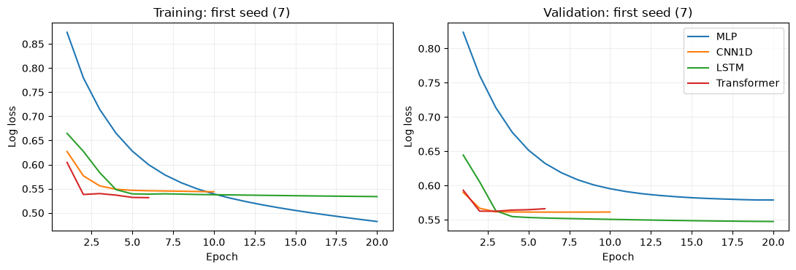
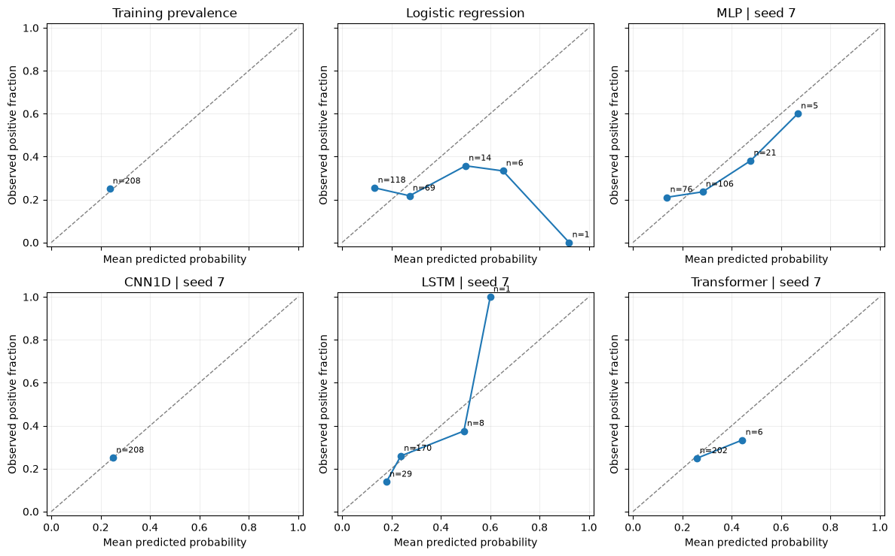

Sensitivity to initialization: temporal models
Four architectures, three seeds and one weekly occurrence task
Download prepared notebook Open Colab to upload the notebook Notebook with prepared outputs Blank Colab for self-study All tutorials
This laboratory repeats each architecture with seeds 7, 17 and 27 under a fixed data and evaluation protocol. Run all cells in sequence and retain every fit. For a step-by-step introduction with one training run per model, see the guided tutorial.
How sensitive is a model comparison to initialization? Repeat each architecture with seeds 7, 17 and 27 to examine training sensitivity under a fixed data and evaluation protocol. Run the notebook in sequence, then compare validation losses and calibration.
This independent-study laboratory fits an MLP, a CNN1D, an LSTM and a Transformer with all three seeds: 12 neural fits. Keep all four architecture definitions and every configured seed.
First, understand one observation
Imagine that today is a Monday, the forecast origin t. Before making the forecast, we look at the 30 complete days before t. For each day we record three numbers:
| Daily channel | Meaning and example |
|---|---|
log_count |
Before standardization: log(1 + count) of catalogue events with M >= 4.5. Two events give log(3). |
max_magnitude_excess |
Before standardization: maximum magnitude excess above 4.5; zero if there is no event. A daily maximum of 5.2 gives 0.7. |
has_event |
Before standardization: 1 if at least one M >= 4.5 event occurred, otherwise 0. Two events give 1. |
These numbers form one input window of shape 30 x 3: 30 days, three channels. They are a conceptual example, not an extra observed result. The label is 1 if at least one M >= 5 event occurs in the next seven days, from this Monday through the following Sunday, and 0 otherwise. That future week is excluded from the input. A sigmoid output such as 0.30 is a probability for this binary outcome, not a predicted magnitude or an exact earthquake date.
Checkpoint before any code: point to the input history, the forecast origin, and the target week. One observation is a weekly forecast window, not one earthquake.
Study route
Prepare the catalogue and chronological windows, fit the two reference forecasts, define all four neural architectures, and run the common training cell. Then inspect every run, summarize scores across seeds, and compare calibration with sample counts. The final section saves the experiment and states its limits.
Open the prepared notebook in Colab
Download this comparison notebook. Open Google Colab, choose File > Upload notebook, and select temporal.ipynb. Select a Python CPU runtime and run every cell from the beginning in order. The notebook with prepared outputs provides an example of the complete experiment.
For independent study from a blank notebook, open a new Colab and copy each numbered Python block into its own code cell, in order. The Copy button copies code only. After an interrupted session, begin again from the first cell.
The first run downloads a frozen public data pack automatically. Its URL is pinned to a Git commit and its SHA-256 is checked. The experiment does not query the live catalogue.
If imports fail, run %pip install tensorflow==2.19.1 pandas scikit-learn matplotlib in a separate cell, restart the runtime, and begin again. Consult the environment and execution notes for software versions and verification status. Record your software versions and hardware, and note numerical differences from the supplied results.
Prepare the experiment
We use small networks and three predeclared seeds: 7, 17 and 27. A seed controls pseudo-random choices used during initialization and optimization; variation across seeds is not uncertainty from observing a new earthquake catalogue. Retain every specified run.
The experiment evaluates validation only. The 2021–2025 period has already been inspected and is not an untouched test. Validation also controls early stopping, so its scores describe model development.
Code block 1 · Run the matching prepared-notebook cell in order. For self-study, copy into a new Colab code cell.
import os
os.environ["CUDA_VISIBLE_DEVICES"] = "-1"
os.environ["TF_CPP_MIN_LOG_LEVEL"] = "2"
os.environ["TF_NUM_INTRAOP_THREADS"] = "2"
os.environ["TF_NUM_INTEROP_THREADS"] = "2"
from pathlib import Path
import datetime, hashlib, json, platform, time, uuid, zipfile
from urllib.request import urlopen
import numpy as np
import pandas as pd
import matplotlib.pyplot as plt
import sklearn
import tensorflow as tf
from tensorflow import keras
from IPython.display import display
try:
tf.config.threading.set_intra_op_parallelism_threads(2)
tf.config.threading.set_inter_op_parallelism_threads(2)
except RuntimeError:
print("Thread settings were already initialized; restart for the reference settings.")
SEEDS = [7, 17, 27]
EPOCHS, BATCH_SIZE = 20, 64
TUTORIAL = "temporal"
RUN_DIR = Path("tutorial-runs") / (TUTORIAL + "-" + uuid.uuid4().hex[:12])
RUN_DIR.mkdir(parents=True, exist_ok=False)
started_at = time.perf_counter()
print("Python:", platform.python_version(), "TensorFlow:", tf.__version__, "Keras:", keras.__version__)
print("Validation only. Results will be saved to", RUN_DIR)Example output — seeds 7, 17 and 27
Python: 3.12.14 TensorFlow: 2.19.1 Keras: 3.15.1
Download and verify the frozen catalogue
The pack contains the regional USGS catalogue and its provenance. It includes records down to M 3 for diagnostics; these tutorials retain M ≥ 4.5 as inputs and M ≥ 5 as targets. Magnitudes are the preferred catalogue values, not a claim that all measurements use the same magnitude scale.
The catalogue was downloaded in October 2026 and contains revised records. Separating inputs and targets by event time cannot reconstruct which catalogue versions were available historically. These are retrospective teaching experiments, not operational forecasts or maps of shaking or risk.
Code block 2 · Run the matching prepared-notebook cell in order. For self-study, copy into a new Colab code cell.
PACK_URL = "https://raw.githubusercontent.com/FranPlaza/FranPlaza.github.io/0e7a7e4b1c38490018f11b26170fe6a87e4997f9/courses/statsei14/downloads/data-pack.zip"
PACK_SHA256 = "0ee5d4d71aafa19023fdb1ee6f289a11e7fd7f4ed88ad7a91032ca24505d10a2"
CATALOGUE_SHA256 = "16e9b731a5b407d75a2321d3d0d2c889542e8223a9ee4fe81efe624eb6b166d2"
archive_path = Path("statsei14-data-pack.zip")
if not archive_path.exists():
with urlopen(PACK_URL, timeout=60) as response:
payload = response.read()
assert hashlib.sha256(payload).hexdigest() == PACK_SHA256, "Unexpected download: stop."
archive_path.write_bytes(payload)
assert hashlib.sha256(archive_path.read_bytes()).hexdigest() == PACK_SHA256, "Changed cached pack: stop."
DATA_DIR = Path("statsei14-data").resolve()
DATA_DIR.mkdir(exist_ok=True)
with zipfile.ZipFile(archive_path) as archive:
for member in archive.infolist():
assert (DATA_DIR / member.filename).resolve().is_relative_to(DATA_DIR), "Unsafe ZIP member."
archive.extractall(DATA_DIR)
catalogue_path = DATA_DIR / "data/frozen/usgs_chile_2000_2025.csv"
assert hashlib.sha256(catalogue_path.read_bytes()).hexdigest() == CATALOGUE_SHA256
events = pd.read_csv(catalogue_path)
events["time"] = pd.to_datetime(events["time"], utc=True)
events = events.sort_values("time").reset_index(drop=True)
print("Verified catalogue records:", len(events))
display(events[["time", "latitude", "longitude", "mag"]].head())Example output — seeds 7, 17 and 27
Verified catalogue records: 12859
| time | latitude | longitude | mag | |
|---|---|---|---|---|
| 0 | 2000-01-07 11:49:11.720000+00:00 | -28.495 | -69.196 | 4.0 |
| 1 | 2000-01-08 11:43:58.150000+00:00 | -31.017 | -71.339 | 4.4 |
| 2 | 2000-01-11 13:16:34.420000+00:00 | -30.747 | -71.319 | 4.5 |
| 3 | 2000-01-18 17:12:18.360000+00:00 | -31.630 | -71.451 | 4.9 |
| 4 | 2000-01-19 01:24:00.150000+00:00 | -31.440 | -71.384 | 3.8 |
Turn events into daily inputs
Each day has three channels: log(1 + count), maximum magnitude excess above 4.5 (the daily maximum minus 4.5, or zero on an empty day), and an event-presence indicator. The regional series pools all locations. For the spatial tutorials we also keep six fixed geographic cells: three latitude bands by two longitude bands. Cell IDs run west to east within each row, then south to north. They are illustrative geographic bins, not inferred tectonic provinces; degree-based cells do not have identical physical areas. We retain the same domain and magnitude thresholds for every model.
Only training data should be used to judge whether the grid has adequate support. A finer map would create more rare targets, not automatically more useful information. X_regional supplies the regional models. The map and graph models use the six-cell arrays prepared from the same catalogue and calendar.
Code block 3 · Run the matching prepared-notebook cell in order. For self-study, copy into a new Colab code cell.
START = pd.Timestamp("2000-01-01", tz="UTC")
END = pd.Timestamp("2026-01-01", tz="UTC") # exclusive
days = pd.date_range(START, END - pd.Timedelta(days=1), freq="D")
LAT_EDGES = np.array([-34.0, -32.0, -30.0, -28.0])
LON_EDGES = np.array([-74.0, -71.5, -69.0])
N_ROWS, N_COLS = 3, 2
FEATURES = ["log_count", "max_magnitude_excess", "has_event"]
inside = events.latitude.between(LAT_EDGES[0], LAT_EDGES[-1]) & events.longitude.between(LON_EDGES[0], LON_EDGES[-1])
selected = events.loc[inside & (events.time >= START) & (events.time < END) & (events.mag >= 4.5)].copy()
selected["day"] = (selected.time.dt.floor("D") - START).dt.days
selected["row"] = np.clip(np.searchsorted(LAT_EDGES, selected.latitude, side="right") - 1, 0, N_ROWS - 1)
selected["col"] = np.clip(np.searchsorted(LON_EDGES, selected.longitude, side="right") - 1, 0, N_COLS - 1)
counts = np.zeros((len(days), N_ROWS, N_COLS), dtype=np.float32)
max_excess = np.zeros_like(counts)
target_counts = np.zeros_like(counts)
indices = (selected.day.to_numpy(), selected.row.to_numpy(), selected.col.to_numpy())
np.add.at(counts, indices, 1)
np.maximum.at(max_excess, indices, selected.mag.to_numpy() - 4.5)
qualifying = selected.mag.to_numpy() >= 5.0
np.add.at(target_counts, tuple(axis[qualifying] for axis in indices), 1)
daily_grid_raw = np.stack([np.log1p(counts), max_excess, (counts > 0).astype(float)], axis=-1).astype("float32")
daily_regional_raw = np.stack([
np.log1p(counts.sum(axis=(1, 2))),
max_excess.max(axis=(1, 2)),
(counts.sum(axis=(1, 2)) > 0).astype(float)
], axis=-1).astype("float32")
assert int(counts.sum()) == len(selected)
assert int(target_counts.sum()) == int(qualifying.sum())
print("Daily regional:", daily_regional_raw.shape, "; daily grid:", daily_grid_raw.shape)Example output — seeds 7, 17 and 27
Daily regional: (9497, 3) ; daily grid: (9497, 3, 2, 3)
Build histories, labels and chronological partitions
At each Monday origin t, inputs use [t − 30 days, t) and targets use [t, t + 7 days). We remove any target interval that crosses a train/validation/test boundary or the end of the catalogue. Inputs to a later partition can contain earlier historical days; their outcomes never enter training. Weekly target windows do not overlap, although histories overlap and earthquake sequences remain dependent.
The regional target is one binary outcome. The spatial target has six binary outcomes: several cells may be positive in the same week, or all may be zero. Six cell probabilities therefore need not sum to one.
Code block 4 · Run the matching prepared-notebook cell in order. For self-study, copy into a new Colab code cell.
LOOKBACK, HORIZON = 30, 7
VAL_START = pd.Timestamp("2017-01-01", tz="UTC")
TEST_START = pd.Timestamp("2021-01-01", tz="UTC")
regional_windows, grid_windows, grid_labels, kept_origins, partitions = [], [], [], [], []
excluded = []
for origin in pd.date_range("2001-01-01", "2025-12-31", freq="W-MON", tz="UTC"):
i = (origin - START).days
stop = origin + pd.Timedelta(days=HORIZON)
split = "train" if origin < VAL_START else ("validation" if origin < TEST_START else "test")
boundary = VAL_START if split == "train" else (TEST_START if split == "validation" else END)
if i < LOOKBACK or stop > boundary:
excluded.append(str(origin.date()))
continue
regional_windows.append(daily_regional_raw[i - LOOKBACK:i])
grid_windows.append(daily_grid_raw[i - LOOKBACK:i])
grid_labels.append((target_counts[i:i + HORIZON].sum(axis=0) > 0).astype("int32"))
kept_origins.append(origin)
partitions.append(split)
origins = pd.DatetimeIndex(kept_origins)
partitions = np.asarray(partitions)
raw_regional = np.stack(regional_windows)
raw_grid = np.stack(grid_windows)
y_grid = np.stack(grid_labels)
y_regional = y_grid.any(axis=(1, 2)).astype("int32")
train_mask = partitions == "train"
val_mask = partitions == "validation"
test_mask = partitions == "test"
assert np.all(origins[train_mask] + pd.Timedelta(days=HORIZON) <= VAL_START)
assert np.all(origins[val_mask] + pd.Timedelta(days=HORIZON) <= TEST_START)
assert np.all(origins[test_mask] + pd.Timedelta(days=HORIZON) <= END)
assert not np.any(train_mask & val_mask)
print("Windows:", dict(zip(*np.unique(partitions, return_counts=True))))
print("Excluded boundary/incomplete targets:", excluded)
display(pd.DataFrame({
"cell": np.arange(N_ROWS * N_COLS),
"row_south_to_north": np.repeat(np.arange(N_ROWS), N_COLS),
"col_west_to_east": np.tile(np.arange(N_COLS), N_ROWS),
"training_positive_weeks": y_grid[train_mask].sum(axis=0).reshape(-1),
"training_base_rate": y_grid[train_mask].mean(axis=0).reshape(-1)
}))Example output — seeds 7, 17 and 27
Windows: {np.str_('test'): np.int64(260), np.str_('train'): np.int64(834), np.str_('validation'): np.int64(208)}
Excluded boundary/incomplete targets: ['2016-12-26', '2020-12-28', '2025-12-29']
| cell | row_south_to_north | col_west_to_east | training_positive_weeks | training_base_rate | |
|---|---|---|---|---|---|
| 0 | 0 | 0 | 0 | 57 | 0.068345 |
| 1 | 1 | 0 | 1 | 26 | 0.031175 |
| 2 | 2 | 1 | 0 | 49 | 0.058753 |
| 3 | 3 | 1 | 1 | 37 | 0.044365 |
| 4 | 4 | 2 | 0 | 19 | 0.022782 |
| 5 | 5 | 2 | 1 | 41 | 0.049161 |
Standardize using training histories only
For regional inputs, we estimate one mean and standard deviation per channel. For spatial inputs, we also use one pair per channel, pooled across training cells, so the map and graph models receive exactly the same scaled arrays. A historical day can contribute to several overlapping training windows. These training estimates are applied to every validation history. Empty days remain distinguishable through the presence channel. Target labels are never standardized.
The metric function averages squared probability errors and binary log losses. On spatial outputs these are averages of marginal cell scores, not the likelihood of a joint spatial point process. We will also inspect each cell separately.
Code block 5 · Run the matching prepared-notebook cell in order. For self-study, copy into a new Colab code cell.
regional_mean = raw_regional[train_mask].mean(axis=(0, 1), dtype=np.float64)
regional_scale = raw_regional[train_mask].std(axis=(0, 1), dtype=np.float64)
regional_scale = np.where(regional_scale > 0, regional_scale, 1.0)
grid_mean = raw_grid[train_mask].mean(axis=(0, 1, 2, 3), dtype=np.float64)
grid_scale = raw_grid[train_mask].std(axis=(0, 1, 2, 3), dtype=np.float64)
grid_scale = np.where(grid_scale > 0, grid_scale, 1.0)
X_regional = ((raw_regional - regional_mean) / regional_scale).astype("float32")
X_grid = ((raw_grid - grid_mean) / grid_scale).astype("float32")
assert X_regional.shape[1:] == (30, 3) and X_grid.shape[1:] == (30, 3, 2, 3)
assert np.isfinite(X_regional).all() and np.isfinite(X_grid).all()
def score_probabilities(y_true, probability):
y_true = np.asarray(y_true, dtype=float)
probability = np.asarray(probability, dtype=float)
assert y_true.shape == probability.shape
assert np.isin(y_true, [0, 1]).all() and np.isfinite(probability).all()
assert ((probability >= 0) & (probability <= 1)).all()
clipped = np.clip(probability, 1e-7, 1 - 1e-7)
return {"brier": float(np.mean((probability - y_true) ** 2)),
"log_loss": float(-np.mean(y_true * np.log(clipped) + (1 - y_true) * np.log1p(-clipped)))}
protocol = {
"tutorial": TUTORIAL, "seeds": SEEDS, "epochs_max": EPOCHS, "batch_size": BATCH_SIZE,
"lookback_days": LOOKBACK, "horizon_days": HORIZON,
"pack_url": PACK_URL, "pack_sha256": PACK_SHA256, "catalogue_sha256": CATALOGUE_SHA256,
"features": FEATURES, "latitude_edges": LAT_EDGES.tolist(), "longitude_edges": LON_EDGES.tolist(),
"train": "2001-2016", "validation": "2017-2020", "test": "2021-2025; not evaluated here",
"historical_as_of_verified": False, "scope": "Exploratory retrospective; validation only",
"regional_mean": regional_mean.tolist(), "regional_scale": regional_scale.tolist(),
"grid_mean": grid_mean.tolist(), "grid_scale": grid_scale.tolist(),
"python": platform.python_version(), "tensorflow": tf.__version__, "keras": keras.__version__,
"numpy": np.__version__, "pandas": pd.__version__, "scikit_learn": sklearn.__version__
}
(RUN_DIR / "protocol.json").write_text(json.dumps(protocol, indent=2), encoding="utf-8")
pd.DataFrame({"origin": origins.astype(str), "split": partitions}).to_csv(RUN_DIR / "windows.csv", index=False)
print("Ready:", X_regional.shape, X_grid.shape, "; no test outcomes used for fitting or evaluation.")Example output — seeds 7, 17 and 27
Ready: (1302, 30, 3) (1302, 30, 3, 2, 3) ; no test outcomes used for fitting or evaluation.
1. One question, four ways to read a sequence
The target is the probability of at least one catalogue event with M ≥ 5 in the next seven days anywhere in the course region. Every model receives the same preceding 30 days and the same three catalogue channels: log event count, maximum magnitude excess above 4.5, and an event indicator. The channels are standardized using training windows only.
An MLP uses fixed lag positions; a CNN1D shares filters across time; an LSTM updates a recurrent state; a Transformer relates days through attention and position information. Flattening for the MLP keeps each lag in a fixed position: it does not randomly discard order.
Training covers 2001–2016 and validation covers 2017–2020. The previously inspected 2021–2025 period is not evaluated. Validation also controls early stopping, so these scores are development evidence rather than an independent estimate of future performance. The revised catalogue does not establish what records were available in real time.
Checkpoint. A row represents one weekly forecast origin, not one earthquake. Why should we avoid a random split of these rows? Match the arrays to the conceptual window: (number of windows, 30, 3) contains many histories, while each target is a single 0 or 1. Keep the inputs and target fixed while changing how a model reads them.
Code block 6 · Run the matching prepared-notebook cell in order. For self-study, copy into a new Colab code cell.
from sklearn.linear_model import LogisticRegression
FEATURE_NAMES = ['log_count', 'max_magnitude_excess', 'has_event']
assert X_regional.ndim == 3 and X_regional.shape[1:] == (30, 3)
assert len(y_regional) == len(X_regional) == len(origins)
assert np.isfinite(X_regional).all()
assert set(np.unique(y_regional)).issubset({0, 1})
assert not np.any(train_mask & val_mask)
assert not np.any((train_mask | val_mask) & test_mask)
X_train = X_regional[train_mask].astype('float32')
X_val = X_regional[val_mask].astype('float32')
y_train = y_regional[train_mask].astype('float32')
y_val = y_regional[val_mask].astype('float32')
assert len(np.unique(y_train)) == len(np.unique(y_val)) == 2
assert pd.DatetimeIndex(origins[train_mask]).max() < pd.DatetimeIndex(origins[val_mask]).min()
partition_table = pd.DataFrame([
{'split': 'training', 'windows': len(y_train), 'positive_fraction': y_train.mean()},
{'split': 'validation', 'windows': len(y_val), 'positive_fraction': y_val.mean()},
])
display(partition_table)
print('Training input:', X_train.shape, '| Validation input:', X_val.shape)
print('Features:', FEATURE_NAMES)
print('Historical test is not evaluated in this tutorial.')Example output — seeds 7, 17 and 27
| split | windows | positive_fraction | |
|---|---|---|---|
| 0 | training | 834 | 0.236211 |
| 1 | validation | 208 | 0.250000 |
Training input: (834, 30, 3) | Validation input: (208, 30, 3) Features: ['log_count', 'max_magnitude_excess', 'has_event'] Historical test is not evaluated in this tutorial.
2. Start with two reference forecasts
The prevalence forecast assigns every validation week the training positive fraction. Logistic regression receives the same 90 values as the MLP, with fixed L2 regularization and 91 fitted coefficients including the intercept. Neither reference is tuned on validation. Compare each neural network with these inexpensive alternatives before interpreting its extra complexity as useful.
Brier score measures squared probability error; log loss penalizes confident wrong predictions strongly. Smaller values are better for both. Runtime is recorded, but one execution is not a hardware benchmark.
Checkpoint. The training prevalence assigns every week the same probability. Logistic regression uses all 30 × 3 = 90 lagged values. What information can change the logistic forecast between weeks?
If a week has outcome 1, predicting 0.8 contributes (0.8 - 1)^2 = 0.04 to Brier score; predicting 0.2 contributes 0.64. The score averages these errors across weeks. Log loss is especially sensitive to being confident and wrong. Calibration asks a different question: among weeks assigned similar probabilities, how often does the event occur?
Code block 7 · Run the matching prepared-notebook cell in order. For self-study, copy into a new Colab code cell.
metric_rows = []
prediction_frames = []
training_histories = {}
validation_predictions = {}
validation_origins = pd.DatetimeIndex(origins[val_mask])
def record_run(name, seed, probabilities, parameters, epochs, seconds):
p = np.asarray(probabilities, dtype=float).reshape(-1)
assert p.shape == y_val.shape and np.isfinite(p).all()
assert np.all((p >= 0) & (p <= 1))
metric_rows.append({
'model': name, 'seed': seed,
**score_probabilities(y_val, p),
'parameters': int(parameters), 'epochs': int(epochs),
'fit_seconds': float(seconds),
})
validation_predictions[(name, seed)] = p
prediction_frames.append(pd.DataFrame({
'origin': validation_origins, 'model': name, 'seed': seed,
'observed': y_val.astype(int), 'probability': p,
}))
training_prevalence = float(y_train.mean())
record_run('Training prevalence', None, np.full(len(y_val), training_prevalence), 1, 0, 0)
started = time.perf_counter()
logistic = LogisticRegression(C=1.0, solver='lbfgs', max_iter=2000)
logistic.fit(X_train.reshape(len(X_train), -1), y_train)
logistic_seconds = time.perf_counter() - started
assert logistic.n_iter_.max() < logistic.max_iter, 'Inspect logistic convergence before comparing.'
p_logistic = logistic.predict_proba(X_val.reshape(len(X_val), -1))[:, 1]
record_run('Logistic regression', None, p_logistic,
logistic.coef_.size + logistic.intercept_.size, 0, logistic_seconds)
display(pd.DataFrame(metric_rows))Example output — seeds 7, 17 and 27
| model | seed | brier | log_loss | parameters | epochs | fit_seconds | |
|---|---|---|---|---|---|---|---|
| 0 | Training prevalence | None | 0.187690 | 0.562855 | 1 | 0 | 0.000000 |
| 1 | Logistic regression | None | 0.203664 | 0.614405 | 91 | 0 | 0.016523 |
3. MLP: learn from fixed lag positions
Flatten changes (30, 3) into (90,) without changing the order of the values. A dense hidden layer can combine channels and days, but does not share the same pattern detector across lag positions.
Checkpoint. Where would the value for the most recent day appear after flattening? What changes if the same temporal pattern shifts five days earlier?
Code block 8 · Run the matching prepared-notebook cell in order. For self-study, copy into a new Colab code cell.
def build_mlp(input_shape):
inputs = keras.Input(shape=input_shape, name='history')
x = keras.layers.Flatten(name='fixed_lag_positions')(inputs)
x = keras.layers.Dense(16, activation='relu', name='hidden')(x)
outputs = keras.layers.Dense(1, activation='sigmoid', name='weekly_probability')(x)
return keras.Model(inputs, outputs, name='MLP')4. CNN1D: look for local temporal patterns
A kernel of width 3 examines three adjacent days at a time, across all input channels. The next convolution combines nearby responses. Global average pooling summarizes the detected patterns before the probability output. This deliberately compact example favors patterns that can appear at different lag positions; it does not preserve every exact lag in the final pooled vector.
The convolution slides over days, not geographic locations. See the Keras time-series CNN example for another application of this idea.
Checkpoint. What useful information might shared filters capture? What exact timing information might pooling lose?
Code block 9 · Run the matching prepared-notebook cell in order. For self-study, copy into a new Colab code cell.
def build_cnn1d(input_shape):
inputs = keras.Input(shape=input_shape, name='history')
x = keras.layers.Conv1D(16, kernel_size=3, padding='same', activation='relu',
name='local_patterns')(inputs)
x = keras.layers.Conv1D(16, kernel_size=3, padding='same', activation='relu',
name='combined_patterns')(x)
x = keras.layers.GlobalAveragePooling1D(name='pool_days')(x)
outputs = keras.layers.Dense(1, activation='sigmoid', name='weekly_probability')(x)
return keras.Model(inputs, outputs, name='CNN1D')5. LSTM: update a state through the history
The LSTM processes the sequence from the oldest day to the most recent day. Its gates determine how its learned state changes as each day is read. The final state feeds the same sigmoid probability output.
This is a stateless model: the state restarts for every 30-day window. We do not carry a hidden state between training and validation examples.
Checkpoint. Why is the final hidden state a representation of the input history rather than a forecast probability by itself?
Trace one history through the model. keras.Input describes one 30 x 3 history. LSTM(16) learns a 16-number summary while reading the days in order. Dense(1, activation='sigmoid') turns that summary into one probability between 0 and 1. keras.Model connects the input to the output; defining the model does not train it.
In the training cell, compile specifies how errors are measured and how weights are updated. model.fit then repeatedly presents training windows and their known labels to adjust those weights. An epoch is one pass through the training examples; a batch is the group of examples used for one update. Validation observations monitor the fit, and early stopping retains the epoch with the lowest validation log loss. These validation scores therefore remain development results.
Code block 10 · Run the matching prepared-notebook cell in order. For self-study, copy into a new Colab code cell.
def build_lstm(input_shape):
inputs = keras.Input(shape=input_shape, name='history')
x = keras.layers.LSTM(16, stateful=False, name='read_history')(inputs)
outputs = keras.layers.Dense(1, activation='sigmoid', name='weekly_probability')(x)
return keras.Model(inputs, outputs, name='LSTM')6. Transformer: relate days using attention and positions
Each day is projected into 16 features. A learned positional embedding adds a trainable vector for each of the 30 lags, allowing the model to distinguish where an observation occurs within the history. Two attention heads combine information across the complete observed history; residual connections, normalization, and a feed-forward block refine that representation.
The Keras time-series Transformer example provides the broader architecture pattern. This model uses learned day positions and the fixed chronological partitions defined above.
A causal attention mask is unnecessary here: all 30 input days precede the forecast origin, and the model produces one probability for the subsequent week. No target-week observation is an input. Attention weights, if inspected, would not establish physical causation.
Checkpoint. Without position information, which aspect of the sequence would attention followed by average pooling struggle to distinguish?
This model has 2,257 trainable parameters, including learned positions. It receives the same 30 × 3 history and produces the same weekly probability as the other architectures. Compare its validation scores against the same references and inspect calibration. More flexible interactions do not guarantee better probabilities.
Code block 11 · Run the matching prepared-notebook cell in order. For self-study, copy into a new Colab code cell.
@keras.utils.register_keras_serializable(package='STATSEI14')
class DayPosition(keras.layers.Layer):
def build(self, input_shape):
self.positions = self.add_weight(
name='positions',
shape=(int(input_shape[1]), int(input_shape[2])),
initializer=keras.initializers.RandomNormal(stddev=0.02),
trainable=True,
)
super().build(input_shape)
def call(self, inputs):
return inputs + self.positions
def get_config(self):
return super().get_config()
def build_transformer(input_shape):
inputs = keras.Input(shape=input_shape, name='history')
x = keras.layers.Dense(16, name='project_day')(inputs)
x = DayPosition(name='day_positions')(x)
attention = keras.layers.MultiHeadAttention(
num_heads=2, key_dim=8, dropout=0.0, name='attention')(x, x)
x = keras.layers.Add(name='attention_residual')([x, attention])
x = keras.layers.LayerNormalization(epsilon=1e-6, name='attention_norm')(x)
feed_forward = keras.layers.Dense(16, activation='relu', name='ff_hidden')(x)
feed_forward = keras.layers.Dense(16, name='ff_output')(feed_forward)
x = keras.layers.Add(name='ff_residual')([x, feed_forward])
x = keras.layers.LayerNormalization(epsilon=1e-6, name='ff_norm')(x)
x = keras.layers.GlobalAveragePooling1D(name='pool_days')(x)
outputs = keras.layers.Dense(1, activation='sigmoid', name='weekly_probability')(x)
return keras.Model(inputs, outputs, name='Transformer')7. Train with a common, small budget
Each architecture uses the same examples, batch size, optimizer, learning rate, maximum epochs, and stopping rule. Parameter counts differ and are reported. These compact starting settings define a controlled comparison; they have not been established as optimal by a hyperparameter search. EarlyStopping is recreated for every fit, monitors validation log loss, and restores the best weights.
Run the preceding definitions and this cell in sequence. It fits all four models for each of the three seeds: 12 fits in total. Progress appears after each fit. Retain every specified run.
Checkpoint. In model.fit(X_train, y_train, ...), training inputs and labels determine weight updates. validation_data supplies the development period used by early stopping. After fitting, model(X_val, training=False) produces probabilities without updating weights. Validation therefore influences weight selection even though its observations do not supply gradient updates.
Seed variation reflects initialization and optimization, not uncertainty from observing a different earthquake catalogue. The three channels stay unchanged across architectures. Adding an ETAS-inspired channel would be a separate input experiment.
Code block 12 · Run the matching prepared-notebook cell in order. For self-study, copy into a new Colab code cell.
BUILDERS = {
'MLP': build_mlp,
'CNN1D': build_cnn1d,
'LSTM': build_lstm,
'Transformer': build_transformer,
}
INPUT_SHAPE = tuple(X_train.shape[1:])
assert len(SEEDS) == len(set(SEEDS)) and len(SEEDS) >= 1
# Reset only this cell's previous neural runs if it is executed again.
metric_rows = [row for row in metric_rows if row['model'] not in BUILDERS]
prediction_frames = [frame for frame in prediction_frames
if frame['model'].iloc[0] not in BUILDERS]
validation_predictions = {key: value for key, value in validation_predictions.items()
if key[0] not in BUILDERS}
training_histories = {}
for name, builder in BUILDERS.items():
for seed in SEEDS:
keras.backend.clear_session()
keras.utils.set_random_seed(seed)
model = builder(INPUT_SHAPE)
model.compile(
optimizer=keras.optimizers.Adam(learning_rate=0.001),
loss=keras.losses.BinaryCrossentropy(),
)
stopping = keras.callbacks.EarlyStopping(
monitor='val_loss', patience=3, restore_best_weights=True,
)
started = time.perf_counter()
history = model.fit(
X_train, y_train,
validation_data=(X_val, y_val),
epochs=EPOCHS, batch_size=BATCH_SIZE,
callbacks=[stopping], shuffle=False, verbose=0,
)
seconds = time.perf_counter() - started
# All validation windows fit in memory; inference has no dropout or updates.
p = model(X_val, training=False).numpy().reshape(-1)
record_run(name, seed, p, model.count_params(),
len(history.history['loss']), seconds)
training_histories[f'{name}_seed_{seed}'] = {
key: [float(value) for value in values]
for key, values in history.history.items()
}
scores = metric_rows[-1]
print(f"{name:12s} seed={seed:2d} | params={model.count_params():4d} | "
f"epochs={scores['epochs']:2d} | Brier={scores['brier']:.4f} | "
f"log loss={scores['log_loss']:.4f} | {seconds:.1f}s")Example output — seeds 7, 17 and 27
MLP seed= 7 | params=1473 | epochs=20 | Brier=0.1918 | log loss=0.5789 | 1.4s
MLP seed=17 | params=1473 | epochs=16 | Brier=0.1982 | log loss=0.5897 | 1.1s
MLP seed=27 | params=1473 | epochs=20 | Brier=0.1956 | log loss=0.5946 | 1.3s
CNN1D seed= 7 | params= 961 | epochs=10 | Brier=0.1871 | log loss=0.5612 | 1.0s
CNN1D seed=17 | params= 961 | epochs=12 | Brier=0.1872 | log loss=0.5615 | 1.1s
CNN1D seed=27 | params= 961 | epochs=13 | Brier=0.1867 | log loss=0.5603 | 1.1s
LSTM seed= 7 | params=1297 | epochs=20 | Brier=0.1815 | log loss=0.5475 | 2.2s
LSTM seed=17 | params=1297 | epochs=20 | Brier=0.1836 | log loss=0.5518 | 2.2s
LSTM seed=27 | params=1297 | epochs=20 | Brier=0.1841 | log loss=0.5529 | 2.2s
Transformer seed= 7 | params=2257 | epochs= 6 | Brier=0.1879 | log loss=0.5625 | 1.6s
Transformer seed=17 | params=2257 | epochs= 5 | Brier=0.1901 | log loss=0.5674 | 1.5s
Transformer seed=27 | params=2257 | epochs= 5 | Brier=0.1883 | log loss=0.5635 | 1.5s
8. Read the full comparison
The first table retains every run. The second reports descriptive means and standard deviations across seeds; the deterministic baselines have one run, so their seed standard deviations are undefined. Models are displayed in a fixed order without selecting a winning seed.
Checkpoint. Does any architecture improve both probability scores over both references? Is the difference larger than the observed variation across seeds? A difference among these small implementations does not establish a universal ranking of MLPs, CNNs, LSTMs, and Transformers.
Compare all architectures against the same two references and the same validation origins. An ETAS-inspired feature experiment changes the input representation and answers a separate comparison question.
Code block 13 · Run the matching prepared-notebook cell in order. For self-study, copy into a new Colab code cell.
model_order = ['Training prevalence', 'Logistic regression', *BUILDERS.keys()]
metrics = pd.DataFrame(metric_rows)
metrics['model'] = pd.Categorical(metrics['model'], categories=model_order, ordered=True)
metrics = metrics.sort_values(['model', 'seed']).reset_index(drop=True)
display(metrics.round(5))
summary = metrics.groupby('model', observed=True).agg(
runs=('brier', 'size'),
brier_mean=('brier', 'mean'), brier_seed_sd=('brier', 'std'),
log_loss_mean=('log_loss', 'mean'), log_loss_seed_sd=('log_loss', 'std'),
parameters=('parameters', 'first'),
epochs_mean=('epochs', 'mean'), fit_seconds_mean=('fit_seconds', 'mean'),
).reindex(model_order)
display(summary.round(5))
fig, axes = plt.subplots(1, 2, figsize=(11, 3.8))
for name in BUILDERS:
history = training_histories[f'{name}_seed_{SEEDS[0]}']
epochs = np.arange(1, len(history['loss']) + 1)
axes[0].plot(epochs, history['loss'], label=name)
axes[1].plot(epochs, history['val_loss'], label=name)
for ax, label in zip(axes, ['Training', 'Validation']):
ax.set(title=f'{label}: first seed ({SEEDS[0]})', xlabel='Epoch', ylabel='Log loss')
ax.grid(alpha=0.2)
axes[1].legend()
plt.tight_layout()
plt.show()Example output — seeds 7, 17 and 27
| model | seed | brier | log_loss | parameters | epochs | fit_seconds | |
|---|---|---|---|---|---|---|---|
| 0 | Training prevalence | NaN | 0.18769 | 0.56286 | 1 | 0 | 0.00000 |
| 1 | Logistic regression | NaN | 0.20366 | 0.61441 | 91 | 0 | 0.01652 |
| 2 | MLP | 7.0 | 0.19181 | 0.57892 | 1473 | 20 | 1.35043 |
| 3 | MLP | 17.0 | 0.19822 | 0.58973 | 1473 | 16 | 1.09686 |
| 4 | MLP | 27.0 | 0.19561 | 0.59464 | 1473 | 20 | 1.29875 |
| 5 | CNN1D | 7.0 | 0.18706 | 0.56120 | 961 | 10 | 0.97791 |
| 6 | CNN1D | 17.0 | 0.18717 | 0.56146 | 961 | 12 | 1.05500 |
| 7 | CNN1D | 27.0 | 0.18673 | 0.56026 | 961 | 13 | 1.10786 |
| 8 | LSTM | 7.0 | 0.18152 | 0.54751 | 1297 | 20 | 2.21072 |
| 9 | LSTM | 17.0 | 0.18362 | 0.55182 | 1297 | 20 | 2.19325 |
| 10 | LSTM | 27.0 | 0.18405 | 0.55289 | 1297 | 20 | 2.19296 |
| 11 | Transformer | 7.0 | 0.18790 | 0.56248 | 2257 | 6 | 1.60366 |
| 12 | Transformer | 17.0 | 0.19011 | 0.56742 | 2257 | 5 | 1.50669 |
| 13 | Transformer | 27.0 | 0.18831 | 0.56350 | 2257 | 5 | 1.52511 |
| runs | brier_mean | brier_seed_sd | log_loss_mean | log_loss_seed_sd | parameters | epochs_mean | fit_seconds_mean | |
|---|---|---|---|---|---|---|---|---|
| model | ||||||||
| Training prevalence | 1 | 0.18769 | NaN | 0.56286 | NaN | 1 | 0.00000 | 0.00000 |
| Logistic regression | 1 | 0.20366 | NaN | 0.61441 | NaN | 91 | 0.00000 | 0.01652 |
| MLP | 3 | 0.19521 | 0.00322 | 0.58776 | 0.00804 | 1473 | 18.66667 | 1.24868 |
| CNN1D | 3 | 0.18699 | 0.00023 | 0.56097 | 0.00063 | 961 | 11.66667 | 1.04692 |
| LSTM | 3 | 0.18307 | 0.00135 | 0.55074 | 0.00285 | 1297 | 20.00000 | 2.19898 |
| Transformer | 3 | 0.18877 | 0.00118 | 0.56447 | 0.00261 | 2257 | 5.33333 | 1.54515 |

9. Inspect calibration with bin counts
A reliability plot compares the average predicted probability with the observed positive fraction. We use five fixed bins and annotate their sample counts. Empty bins have no estimated event rate and are omitted from the lines. A point based on a handful of weeks is weak evidence about calibration.
To avoid selecting a favorable run or silently averaging predictions into an ensemble, the plots use the first predeclared seed for every neural model. The full score tables above retain all seeds. Adjacent windows share input days and seismic sequences can remain dependent, so these plots are descriptive; no independent-bin confidence intervals are claimed.
Checkpoint. Can a nearly constant forecast be well calibrated while providing little discrimination between weeks?
Compare the LSTM and Transformer panels using the same axes and bins. A lower Brier score alone does not establish good calibration, and a small bin cannot support a precise calibration claim.
Code block 14 · Run the matching prepared-notebook cell in order. For self-study, copy into a new Colab code cell.
def calibration_table(y_true, probabilities, bins=5):
edges = np.linspace(0.0, 1.0, bins + 1)
indices = np.searchsorted(edges[1:-1], probabilities, side='right')
rows = []
for b in range(bins):
inside = indices == b
count = int(inside.sum())
rows.append({
'bin_left': edges[b], 'bin_right': edges[b + 1], 'count': count,
'mean_probability': float(probabilities[inside].mean()) if count else np.nan,
'observed_fraction': float(y_true[inside].mean()) if count else np.nan,
})
return pd.DataFrame(rows)
calibration_frames = []
fig, axes = plt.subplots(2, 3, figsize=(12, 7.5), sharex=True, sharey=True)
for ax, name in zip(axes.flat, model_order):
seed = SEEDS[0] if name in BUILDERS else None
table = calibration_table(y_val, validation_predictions[(name, seed)])
calibration_frames.append(table.assign(model=name, seed=seed))
occupied = table[table['count'] > 0]
ax.plot([0, 1], [0, 1], '--', color='gray', linewidth=1)
ax.plot(occupied['mean_probability'], occupied['observed_fraction'], 'o-')
for row in occupied.itertuples():
ax.annotate(f'n={row.count}', (row.mean_probability, row.observed_fraction),
xytext=(3, 5), textcoords='offset points', fontsize=8)
suffix = f' | seed {seed}' if seed is not None else ''
ax.set(title=name + suffix, xlim=(-0.02, 1.02), ylim=(-0.02, 1.02),
xlabel='Mean predicted probability', ylabel='Observed positive fraction')
ax.grid(alpha=0.2)
plt.tight_layout()
plt.show()
calibration = pd.concat(calibration_frames, ignore_index=True)
display(calibration)Example output — seeds 7, 17 and 27

| bin_left | bin_right | count | mean_probability | observed_fraction | model | seed | |
|---|---|---|---|---|---|---|---|
| 0 | 0.0 | 0.2 | 0 | NaN | NaN | Training prevalence | None |
| 1 | 0.2 | 0.4 | 208 | 0.236211 | 0.250000 | Training prevalence | None |
| 2 | 0.4 | 0.6 | 0 | NaN | NaN | Training prevalence | None |
| 3 | 0.6 | 0.8 | 0 | NaN | NaN | Training prevalence | None |
| 4 | 0.8 | 1.0 | 0 | NaN | NaN | Training prevalence | None |
| 5 | 0.0 | 0.2 | 118 | 0.131998 | 0.254237 | Logistic regression | None |
| 6 | 0.2 | 0.4 | 69 | 0.273292 | 0.217391 | Logistic regression | None |
| 7 | 0.4 | 0.6 | 14 | 0.500278 | 0.357143 | Logistic regression | None |
| 8 | 0.6 | 0.8 | 6 | 0.651486 | 0.333333 | Logistic regression | None |
| 9 | 0.8 | 1.0 | 1 | 0.919837 | 0.000000 | Logistic regression | None |
| 10 | 0.0 | 0.2 | 76 | 0.137772 | 0.210526 | MLP | 7 |
| 11 | 0.2 | 0.4 | 106 | 0.282319 | 0.235849 | MLP | 7 |
| 12 | 0.4 | 0.6 | 21 | 0.476655 | 0.380952 | MLP | 7 |
| 13 | 0.6 | 0.8 | 5 | 0.667842 | 0.600000 | MLP | 7 |
| 14 | 0.8 | 1.0 | 0 | NaN | NaN | MLP | 7 |
| 15 | 0.0 | 0.2 | 0 | NaN | NaN | CNN1D | 7 |
| 16 | 0.2 | 0.4 | 208 | 0.250175 | 0.250000 | CNN1D | 7 |
| 17 | 0.4 | 0.6 | 0 | NaN | NaN | CNN1D | 7 |
| 18 | 0.6 | 0.8 | 0 | NaN | NaN | CNN1D | 7 |
| 19 | 0.8 | 1.0 | 0 | NaN | NaN | CNN1D | 7 |
| 20 | 0.0 | 0.2 | 29 | 0.179272 | 0.137931 | LSTM | 7 |
| 21 | 0.2 | 0.4 | 170 | 0.237560 | 0.258824 | LSTM | 7 |
| 22 | 0.4 | 0.6 | 8 | 0.493324 | 0.375000 | LSTM | 7 |
| 23 | 0.6 | 0.8 | 1 | 0.600097 | 1.000000 | LSTM | 7 |
| 24 | 0.8 | 1.0 | 0 | NaN | NaN | LSTM | 7 |
| 25 | 0.0 | 0.2 | 0 | NaN | NaN | Transformer | 7 |
| 26 | 0.2 | 0.4 | 202 | 0.257570 | 0.247525 | Transformer | 7 |
| 27 | 0.4 | 0.6 | 6 | 0.443502 | 0.333333 | Transformer | 7 |
| 28 | 0.6 | 0.8 | 0 | NaN | NaN | Transformer | 7 |
| 29 | 0.8 | 1.0 | 0 | NaN | NaN | Transformer | 7 |
10. Save this run and state its limits
Save the validation probabilities, all seed metrics, calibration counts, training traces, and settings into this execution’s new output folder. Colab storage is temporary: download the resulting archive before closing the session.
These are retrospective development results from a revised catalogue. They do not demonstrate prospective forecasting skill, real-time catalogue availability, causation, earthquake prediction at an exact time/location, or operational warning performance.
Closing checkpoint. Complete three sentences: “Our LSTM comparison shows …”; “These validation results cannot establish …”; “The next controlled experiment would change … while keeping … fixed.” Distinguish an architecture change from a change to the input representation.
Code block 15 · Run the matching prepared-notebook cell in order. For self-study, copy into a new Colab code cell.
import shutil
TEMPORAL_RUN_DIR = RUN_DIR / 'temporal'
TEMPORAL_RUN_DIR.mkdir(parents=True, exist_ok=False)
metrics.to_csv(TEMPORAL_RUN_DIR / 'validation_metrics_by_seed.csv', index=False)
summary.to_csv(TEMPORAL_RUN_DIR / 'validation_metric_summary.csv')
pd.concat(prediction_frames, ignore_index=True).to_csv(
TEMPORAL_RUN_DIR / 'validation_predictions.csv', index=False)
calibration.to_csv(TEMPORAL_RUN_DIR / 'validation_calibration.csv', index=False)
(TEMPORAL_RUN_DIR / 'training_histories.json').write_text(
json.dumps(training_histories, indent=2), encoding='utf-8')
metadata = {
'tutorial': 'temporal', 'catalogue_mode': 'revised_retrospective',
'features': FEATURE_NAMES, 'input_shape': list(INPUT_SHAPE),
'seeds': list(SEEDS), 'max_epochs': EPOCHS, 'batch_size': BATCH_SIZE,
'optimizer': 'Adam', 'learning_rate': 0.001,
'early_stopping': {'monitor': 'val_loss', 'patience': 3, 'restore_best_weights': True},
'shuffle': False, 'scaler_fit_split': 'training',
'validation_used_for_stopping': True, 'test_evaluated': False,
'target': 'At least one M >= 5 catalogue event in the following seven days',
'train_origin_range': [str(origins[train_mask][0]), str(origins[train_mask][-1])],
'validation_origin_range': [str(validation_origins[0]), str(validation_origins[-1])],
'training_windows': len(y_train), 'validation_windows': len(y_val),
'training_prevalence': training_prevalence,
'logistic': {'C': 1.0, 'penalty': 'l2', 'solver': 'lbfgs', 'max_iter': 2000},
'tensorflow_version': tf.__version__, 'keras_version': keras.__version__,
'numpy_version': np.__version__, 'sklearn_version': sklearn.__version__,
'interpretation': 'Descriptive validation comparison; no independent prospective evaluation',
}
(TEMPORAL_RUN_DIR / 'run_metadata.json').write_text(
json.dumps(metadata, indent=2), encoding='utf-8')
# Include the shared data provenance and exact window assignments in the archive.
shutil.copy2(RUN_DIR / 'protocol.json', TEMPORAL_RUN_DIR / 'data_protocol.json')
shutil.copy2(RUN_DIR / 'windows.csv', TEMPORAL_RUN_DIR / 'windows.csv')
archive = shutil.make_archive(str(RUN_DIR / 'temporal-results'), 'zip', TEMPORAL_RUN_DIR)
print('Saved:', TEMPORAL_RUN_DIR)
print('Archive:', archive)
# In Colab, uncomment these two lines to download your results:
# from google.colab import files
# files.download(archive)Further experiments: change one thing at a time
- Relate all four architectures to the same 30 × 3 input. Explain which operations use fixed lag positions, shared local filters, recurrent states or attention.
- Inspect which probability errors drive a difference in Brier score and log loss. Use the saved predictions and every predeclared seed rather than the best-looking run.
- Plan a separate input experiment: add the same precomputed ETAS-inspired history channel to every architecture, with the same partitions and training-only scaling. Treat this as an input comparison; do not mix it with the architecture comparison or use the already inspected test period to choose changes.
- Continue to the spatial tutorials. A regional daily count has discarded event locations. A grid and a graph retain cell-level information before the temporal model reads the history.
- Rebuild the notebook from a blank Colab, copying the numbered blocks in order, to practice assembling the data and modelling pipeline.
Declare each candidate and comparison criterion before fitting. Validation informs development choices; an independent assessment requires an untouched chronological evaluation period and a frozen protocol.
References and next steps
- Keras: Time-series classification from scratch (CNN1D)
- Keras: Time-series classification with a Transformer model
- Keras: Conv1D layer
- Keras: LSTM layer
- Keras: MultiHeadAttention layer
Return to the practical guide. These implementations adapt general Keras mechanisms to an exploratory teaching task; their documentation does not validate earthquake forecasting skill.